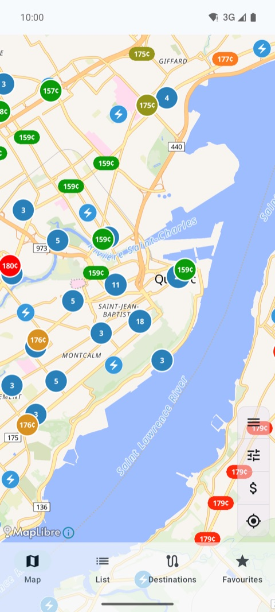
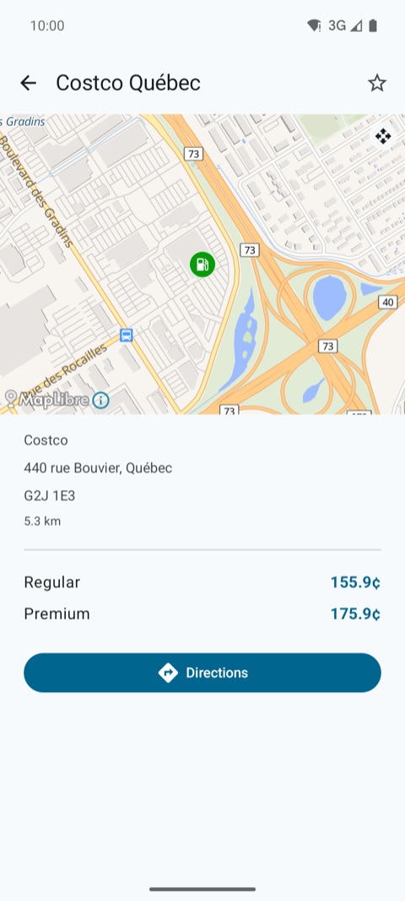
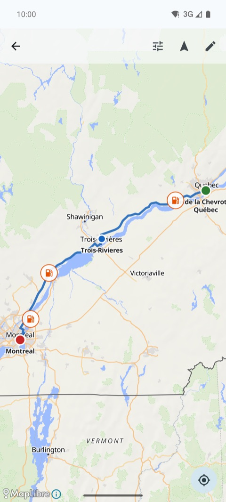

Real-time gas prices and EV charging stations in Québec for Android, completely free and ad-free.

Prices on the map

Station detail

Multi-stop trip
Get the app
- Google Play: Tromi (free, ad-free)
Features
- Real-time prices for over 2,300 Québec gas stations (regular, premium, diesel), with 30-day history and regional averages
- Over 17,000 EV chargers from Circuit électrique and Open Charge Map, filtered by level and connector
- Multi-stop trip planner with suggestions along the way (cheap gas, chargers, rest areas, attractions, parks), then hand-off to Google Maps or Waze
- Québec's official scenic routes, STQ ferry schedules, highway rest areas, over 4,800 tourist attractions and 49 parks
- Price alerts and a home-screen price widget
- Android Auto: nearby stations and your active trip on the car screen
- Light or dark mode, 5 languages (French, English, Spanish, Italian, Portuguese), TalkBack support
Data sources
- Régie de l'énergie du Québec: gas prices
- Le Circuit électrique and Open Charge Map: EV chargers
- OpenStreetMap: map and station amenities
- Société des traversiers du Québec: ferry schedules
- Ministère des Transports du Québec: highway rest areas
- Tourisme Québec / SIT Québec: tourist attractions
- Ministère des Ressources naturelles et des Forêts: parks; Wikipedia: park descriptions
- OpenRouteService: trip routing
- Statistics Canada: average retail gas prices
Privacy
Privacy policy
Support
Questions or problems? Use the contact link on the app's Google Play listing.